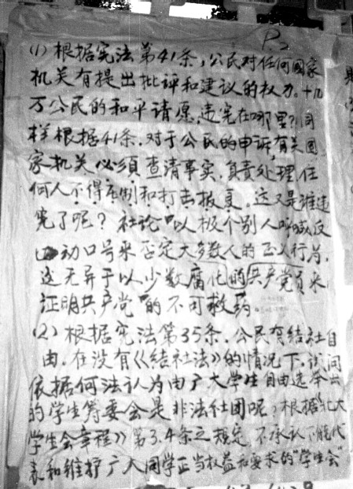
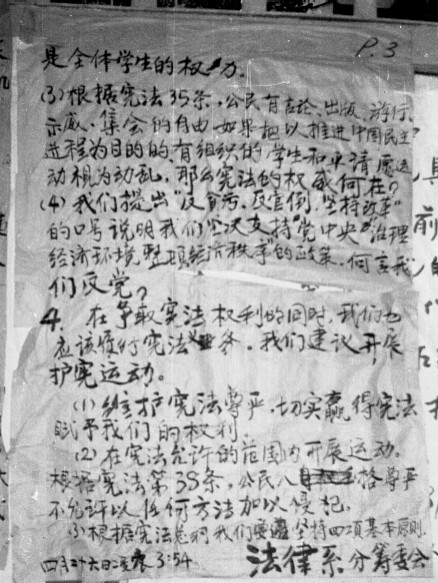
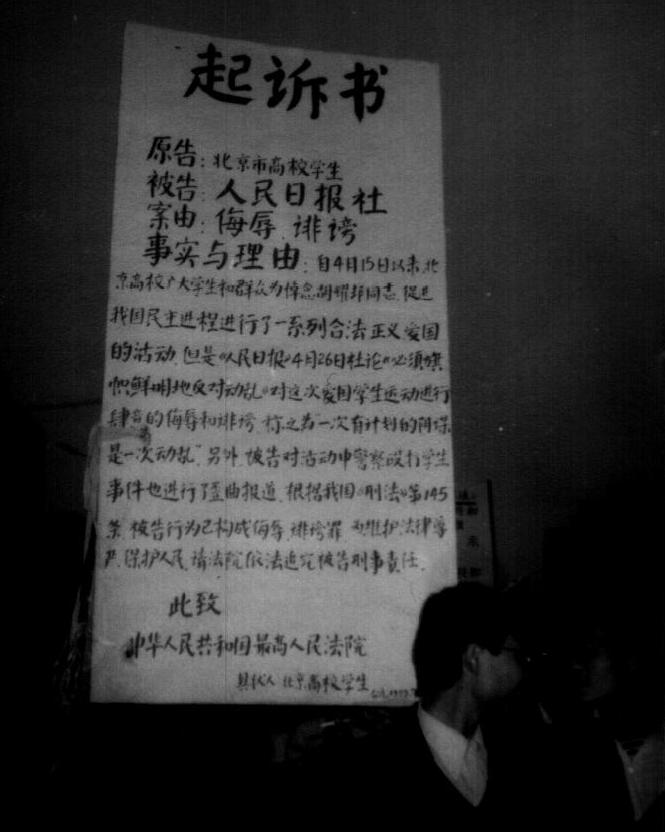
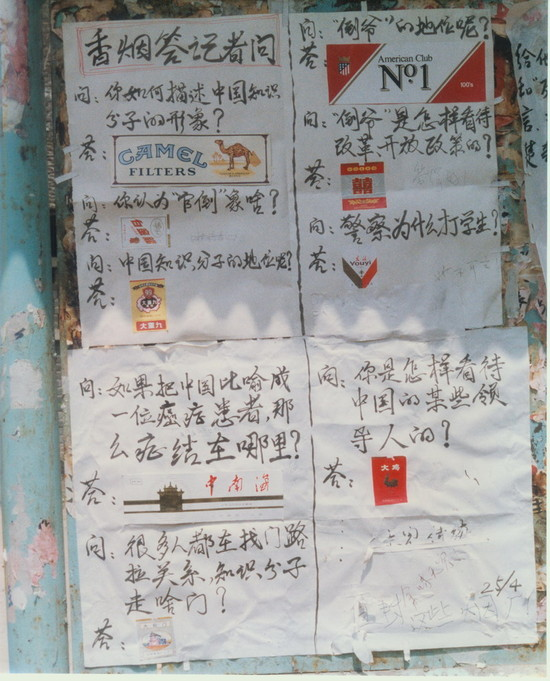

上一个帖子介绍了“4·26社论”出笼的经过。这篇社论最早是在25日晚间，由中央电台和中央电视台对全国广播。社论发布后，引发了社会各界迥然不同的反应。
426社论出笼之后，天朝的各个衙门（包括党、政、军的各级部门）纷纷发表声明。声明的内容大同小异，无非就是——支持裆中央的决定、学习裆中央的精神。
稍微跑题一下。
在天朝的官场，上述声明称之为“表态”。大伙儿千万别小看了这玩意儿，这里面的学问可大了，简直称得上是一门艺术。俺之前曾在博文中说过：在天朝官场，拿错钱（贪污腐败问题）不要紧，上错床（生活作风问题）也不要紧，但是站错队（政治路线问题）就大大滴要紧。所以，那些精明的官员，往往能够见风转舵，在关键的时刻发表一些恰到好处的“表态”，以示自己没有站错队——只有这样，才能在官场中左右逢源，屹立而不倒。
言归正传。话说当时的朝廷衙门中，如下3个衙门对“426社论”的响应最积极。
北京市委的李锡铭（市委书记）和陈希同（市长）因为参加了太上皇家中的御前会议（25日上午），知道了邓矬子的讲话内容。当天下午他俩就召开北京市委的常委会，通报了邓太上皇的讲话精神。当天晚上，又马不停蹄地召开一个扩大会议，把北京市的区县级党委负责人和北京市所有高校的党委负责人都叫来，传达太上皇的旨意。
国家教委的速度比北京市委稍慢了一些。25日的晚上，国家教委向全国所有省级教育部门和直属高校发出通知，要求：
上海市委的江泽民也很积极，不光在25日晚间召开市委紧急会议，通报太上皇的重要指示。到了次日（26日），老江还大张旗鼓地搞了一个全市基层党员干部大会，地点选在上海市体育馆，号称有一万四千人参加。老江还亲自上台讲话。（以下是老江的讲话内容，摘自《天安门文件》）
顺便说一下，就是在这个会议上，老江宣布对《世界经济导报》进行整顿。关于“《世界经济导报》事件”，本系列前面的帖子（在"这里"）已经专门介绍过，此处不再啰嗦。
为啥是这三个衙门最积极响应捏？
上一篇讲到，北京市委跟李鹏是同穿一条裤子滴（都是保守派），对这个426社论自然要大力捧场；至于教委——因为大学生闹事属于教委管辖范围的份内事儿，所以国家教委自然也要积极响应。
但是远在上海的江泽民，为啥也这么积极捏？这恰恰说明老江这人是政治老手，擅长于政治投机。他通过社论，更加肯定了：政治风向已转到保守派一边。所以才如此高调地进行表态。
虽然国家教委很积极，但是工作在一线，直接面对大学生的那些高校领导，则发表了不同的看法。俺从《天安门文件》一书，摘录了若干高校领导的看法。这些高校，既有北京的，也有外地的；既有名牌大学，也有不知名大学。因此，具有一定的代表性。
北京大学宣传部副部长古平：
清华大学党委副书记贺美英：
政法大学党委副书记谢战原：
武汉大学校长齐民友：
四川大学党委副书记陈炳元：
西南财大党委书记王永锡：
山东师范大学党委副书记徐卓斌：
武汉水利电力学院教授陈绍炎说：
西安交通大学宣传部负责人：
从4月15日胡先帝驾崩到4月25日，学生运动已经持续了10天，而且老胡的追悼会也已经开过了。参与运动的学生中，真正的积极分子毕竟是少数，大多数人的热情开始慢慢消退。而且到了4月底5月初，那些应届毕业生也要开始忙活自己的事情。所以，追悼会开完的三天（从4月22日到25日），学运慢慢趋于和缓。上街游行的人数变少，大字报也变少。如果没有426社论，或许会像86学潮那样，渐渐归于平静。
但是捏，26日的这篇社论，突然把大部分学生给激怒了。当时的大部分学生都认为自己是爱国的——不但反腐反贪是爱国的表现，争取言论自由也是爱国的表现。但是朝廷却把学生的行为定性为“动乱”，这让人情何以堪？所以，这篇社论一下子就激发起大学生上街的热情和继续抗争的斗志。
很多高校的学生听了25日的新闻联播之后，彻夜赶制大字报并贴了出来。根据官方的说法（参见《1989北京制止动乱平息反革命暴乱纪事》第45页），北京58所高校全天共出现1270多张大字报——俺真的很佩服当年大学生的爱国热情，也很佩服朝廷的爪牙彻夜统计大字报的敬业精神（当一条走狗不易啊）。
下面摘录一些北京及外地的大字报，从中可以看出当时学生们的态度。
北京大学的《评〈人民日报〉社论》


《也谈动乱》
中央戏剧学院的《必须坚决摧垮给人民带来动乱的真正祸根──驳〈人民日报〉「4.26」社论》
中国科技大学的《科大学生十条纲领》
吉林大学的《吉大宣言》
（编程随想注：头两篇大字报摘自陈小雅的《八九民运史》149~151页，接下来的三篇摘自官方的《惊心动魄的五十六天》44~45页）
下面这张大字报署名“北京高校学生”，不晓得是哪个大学的。

下面这张叫做“香烟答记者问”，也是4月25日贴出来的，内容比较搞笑而且讽刺很到位。

除了贴大字报，全国各地的很多高校在25日夜里就上街游行。（以下摘自《天安门文件》）
从上述介绍可以看出，很多大学生的热情被重新点燃。之后，学运被推向新的高潮。可以这么说，“426社论”是整个“六四事件”的第二个关键点（第一个关键点是老胡逝世）。下一个帖子，俺来说说社论引发的高潮——427大游行。
（本文照片引自 华夏文摘）
回到本系列的目录
★衙门对社论的反应——坚决拥护
426社论出笼之后，天朝的各个衙门（包括党、政、军的各级部门）纷纷发表声明。声明的内容大同小异，无非就是——支持裆中央的决定、学习裆中央的精神。
稍微跑题一下。
在天朝的官场，上述声明称之为“表态”。大伙儿千万别小看了这玩意儿，这里面的学问可大了，简直称得上是一门艺术。俺之前曾在博文中说过：在天朝官场，拿错钱（贪污腐败问题）不要紧，上错床（生活作风问题）也不要紧，但是站错队（政治路线问题）就大大滴要紧。所以，那些精明的官员，往往能够见风转舵，在关键的时刻发表一些恰到好处的“表态”，以示自己没有站错队——只有这样，才能在官场中左右逢源，屹立而不倒。
言归正传。话说当时的朝廷衙门中，如下3个衙门对“426社论”的响应最积极。
◇北京市委
北京市委的李锡铭（市委书记）和陈希同（市长）因为参加了太上皇家中的御前会议（25日上午），知道了邓矬子的讲话内容。当天下午他俩就召开北京市委的常委会，通报了邓太上皇的讲话精神。当天晚上，又马不停蹄地召开一个扩大会议，把北京市的区县级党委负责人和北京市所有高校的党委负责人都叫来，传达太上皇的旨意。
◇国家教委
国家教委的速度比北京市委稍慢了一些。25日的晚上，国家教委向全国所有省级教育部门和直属高校发出通知，要求：
认真学习和领会好这篇社论的精神。同时要发动党支部组织干部、党员、教师和学生中的积极分子学习社论，统一思想，统一认识。
◇上海市委
上海市委的江泽民也很积极，不光在25日晚间召开市委紧急会议，通报太上皇的重要指示。到了次日（26日），老江还大张旗鼓地搞了一个全市基层党员干部大会，地点选在上海市体育馆，号称有一万四千人参加。老江还亲自上台讲话。（以下是老江的讲话内容，摘自《天安门文件》）
要求全市广大党员群众认真学习《人民日报》社论；采取有效措施，坚决维护得来不易的安定团结的局面；决不允许成立任何非法组织；禁止非法示威游行；禁止以各种形式到工厂、农村、学校、机关进行串联；对于内容出格的大字报，要坚决揭去；对于打砸抢的人，坚决予以严惩。
顺便说一下，就是在这个会议上，老江宣布对《世界经济导报》进行整顿。关于“《世界经济导报》事件”，本系列前面的帖子（在"这里"）已经专门介绍过，此处不再啰嗦。
为啥是这三个衙门最积极响应捏？
上一篇讲到，北京市委跟李鹏是同穿一条裤子滴（都是保守派），对这个426社论自然要大力捧场；至于教委——因为大学生闹事属于教委管辖范围的份内事儿，所以国家教委自然也要积极响应。
但是远在上海的江泽民，为啥也这么积极捏？这恰恰说明老江这人是政治老手，擅长于政治投机。他通过社论，更加肯定了：政治风向已转到保守派一边。所以才如此高调地进行表态。
★高校领导对社论的反应——持保留态度
虽然国家教委很积极，但是工作在一线，直接面对大学生的那些高校领导，则发表了不同的看法。俺从《天安门文件》一书，摘录了若干高校领导的看法。这些高校，既有北京的，也有外地的；既有名牌大学，也有不知名大学。因此，具有一定的代表性。
北京大学宣传部副部长古平：
社论采取一概否定和简单化的做法，不实事求是。
清华大学党委副书记贺美英：
社论把一些学生推了过去，绝大多数干部、教师、学生从感情上不能接受，觉得中央的决定来得突然，定性有些一边倒。
政法大学党委副书记谢战原：
社论播发后，不少同学都很震惊，觉得中央定调太高，这与在此之前中央的宽容精神很不相称，学生们很难接受。学生认为这不是在搞动乱，只是提一些民主要求，希望中央领导出来对话。
武汉大学校长齐民友：
社论发表后，问题不是解决了，而是使问题深化了。
四川大学党委副书记陈炳元：
社论有它虚弱的一面。读了社论，联系到党内许多不如人意的地方，总觉得没有攻心之力。
西南财大党委书记王永锡：
为什么这次学生游行，从教授、青年教师到干部，同情者比以前多了呢？一句话，共产党确实应该严格要求自己了。
山东师范大学党委副书记徐卓斌：
我认为，社会需要安定团结，但靠权威实现的安定团结只能是暂时的，随之而来的可能是更大的不安定。
武汉水利电力学院教授陈绍炎说：
‘学生运动’应与‘动乱’分开谈。社论中的'阴谋'，在掌握确凿证据前不应该这样讲。学生运动的根本原因，在于党风、政风。武汉学生的游行，我看是规矩的，不是动乱，也不是有人操纵的，而是自发的。
西安交通大学宣传部负责人：
社论发表后，现在有部份教师，包括一些老教授同情学生。全校组织学习社论的会，有三分之二的教师不来开会，有的教授一听开会连门都不开。省电视台组织部份教师座谈，有的辅导员竟公开说：‘学生上街游行是合法的’、‘你们能撕掉大字报，但撕不掉入心’。
★高校学生对社论的反应——强烈反对
从4月15日胡先帝驾崩到4月25日，学生运动已经持续了10天，而且老胡的追悼会也已经开过了。参与运动的学生中，真正的积极分子毕竟是少数，大多数人的热情开始慢慢消退。而且到了4月底5月初，那些应届毕业生也要开始忙活自己的事情。所以，追悼会开完的三天（从4月22日到25日），学运慢慢趋于和缓。上街游行的人数变少，大字报也变少。如果没有426社论，或许会像86学潮那样，渐渐归于平静。
但是捏，26日的这篇社论，突然把大部分学生给激怒了。当时的大部分学生都认为自己是爱国的——不但反腐反贪是爱国的表现，争取言论自由也是爱国的表现。但是朝廷却把学生的行为定性为“动乱”，这让人情何以堪？所以，这篇社论一下子就激发起大学生上街的热情和继续抗争的斗志。
◇大字报
很多高校的学生听了25日的新闻联播之后，彻夜赶制大字报并贴了出来。根据官方的说法（参见《1989北京制止动乱平息反革命暴乱纪事》第45页），北京58所高校全天共出现1270多张大字报——俺真的很佩服当年大学生的爱国热情，也很佩服朝廷的爪牙彻夜统计大字报的敬业精神（当一条走狗不易啊）。
下面摘录一些北京及外地的大字报，从中可以看出当时学生们的态度。
北京大学的《评〈人民日报〉社论》
我们并没有违宪。（编程随想注：该大字报比较长，上面内容是第一页。俺在网上找到第二三页的照片，如下）
第一，《人民日报》没有权力决定我们这次学生运动是否违宪。根据宪法67条，由人大常委会及人民法院依法定程序作出的关于违宪的决定和判决，才有法律效力。《人民日报》社论只是一家之言，有诽谤之嫌。
第二，《人民日报》社论认为学生违宪必须以具体事实为依据，以具体法律条文为准绳。他们负有举证责任，否则即为造谣诽谤。
第三，并没有任何事实证明学生是违宪的。
......
《也谈动乱》
不知是谁家喉舌的CCTV屏幕上，一个满脸正经的女人庄重地宣布中国出现了一次有计划的阴谋，是一次动乱。也许是恫吓，也许是一场血腥镇压拉开了序幕。不管是前者还是后者，首都几十万学生、教师、知识分子和上百万的工人、市民和干部参与支持的爱国、爱人民的行动，以及他们最纯洁的、最高尚的感情，被这个女人和她背后的某些大人物用'动乱'这个邪恶的字眼粗暴地玷污了。一个政党和政权的领袖们，撕掉最后一块遮羞布，赤裸裸地站到了人民的对立面。他们自持有枪，有警察，有监狱，认定了中国的老百姓是贪生怕死的群氓，在强权的大棒下一定作鸟兽散。（编程随想注：这篇大字报中提到的“拿几百万人头来换”，出自李瑞环之口。之前介绍八六学潮时，提到过此事）
你要民主吗？八七年初已有一位大人物说过，拿几百万人头来换。或许今年的此时是付诸实施的时候了，驻保定的38军怕是已经到了吧？然而，近日之中国已不是80年、83年和86年的中国。老百姓的遮眼罩与神灵们身上的金粉在一年年风雨的冲刷中脱落。也许会再来一个百花凋谢的严冬，但权势者被血泪淹没的日子不会太远了......
中央戏剧学院的《必须坚决摧垮给人民带来动乱的真正祸根──驳〈人民日报〉「4.26」社论》
共产党政府已统治中国大陆40年了，这40年当中，大小动乱包括象『文革』这样的中共政权也称之为『浩劫』的动乱，哪一次不是共产党的内乱造成的？
......
共产党不乱，中国何以乱？！
......
如果我们的人民再听之任之，那么中国的大好河山，必将毁于一党之独裁。
中国科技大学的《科大学生十条纲领》
重新评价胡耀邦的政治改革思想；政治自由和政治公开，反对封建蒙昧专制；一贯抵制政治自由化的邓小平应向公民认错并辞职；重新评价反自由化运动，为自由化正名；为方励之恢复名誉；热烈欢迎方励之回科大当校长。
......
吉林大学的《吉大宣言》
国家兴亡，匹夫有责。
北大起来了，南开也起来了，全国学子为民请命，吉大人焉能作壁上观？
起来吧，吉大人！政治腐败，分配不公，经济混乱，教育不兴，国将不国。夫复何时！
（编程随想注：头两篇大字报摘自陈小雅的《八九民运史》149~151页，接下来的三篇摘自官方的《惊心动魄的五十六天》44~45页）
下面这张大字报署名“北京高校学生”，不晓得是哪个大学的。
下面这张叫做“香烟答记者问”，也是4月25日贴出来的，内容比较搞笑而且讽刺很到位。
◇示威游行
除了贴大字报，全国各地的很多高校在25日夜里就上街游行。（以下摘自《天安门文件》）
当天晚上，长春、上海、天津、杭州、南京、西安、长沙、合肥等城市发生规模不等的游行示威，抗议四二六社论。其中尤以长春的规模最大。
我们摘录中共吉林省委二十五日二十三时五十分的报告：
今晚十八时三十分以后，吉林大学等院校约三千名学生从长春市主要等街道游行到省委门前静坐，强烈要求同省委领导对话，现在，学生们仍在省委门前静坐。据游行学生反映，他们所以上街，是今晚听到中央电台和中央电视台播出的《人民日报》社论称这次运动为“动乱”，感到很受刺激。他们一边谩骂《人民日报》社论，一边高喊“争取民主，反对专制”的口号。长春市中心的斯大林大街中段的交通堵塞了，机动车辆无法行驶。游行队伍到省委门口后，口号声响成一片，要求与省委书记对话，高喊：“何竹康，出来！”
围观的群众多达一万多人。
从上述介绍可以看出，很多大学生的热情被重新点燃。之后，学运被推向新的高潮。可以这么说，“426社论”是整个“六四事件”的第二个关键点（第一个关键点是老胡逝世）。下一个帖子，俺来说说社论引发的高潮——427大游行。
（本文照片引自 华夏文摘）
回到本系列的目录
版权声明
本博客所有的原创文章，作者皆保留版权。转载必须包含本声明，保持本文完整，并以超链接形式注明作者编程随想和本文原始地址：
https://program-think.blogspot.com/2012/07/june-fourth-incident-18.html
本博客所有的原创文章，作者皆保留版权。转载必须包含本声明，保持本文完整，并以超链接形式注明作者编程随想和本文原始地址：
https://program-think.blogspot.com/2012/07/june-fourth-incident-18.html